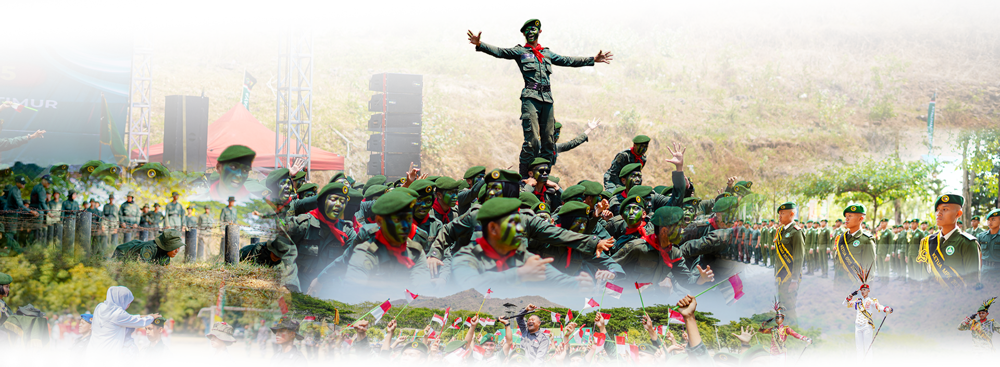

SMAN 5 Taruna Brawijaya
Jawa Timur
Berkarakter • Berprestasi • Mengabdi untuk Negeri
SMAN 5 Taruna Brawijaya
Jawa Timur
Berkarakter • Berprestasi • Mengabdi untuk Negeri
SMAN 5 Taruna Brawijaya Jawa Timur berkomitmen membentuk taruna yang unggul dalam akademik, berkarakter kuat, dan siap mengabdi untuk bangsa dan negara.

Membangun disiplin dan integritas tinggi
Unggul dalam akademik dan non-akademik
Siap mengabdi untuk bangsa dan negara
Informasi Penting


Kami membina taruna yang tidak hanya unggul akademik, tetapi juga tangguh dalam karakter dan siap menghadapi tantangan global.
Tentang Kami